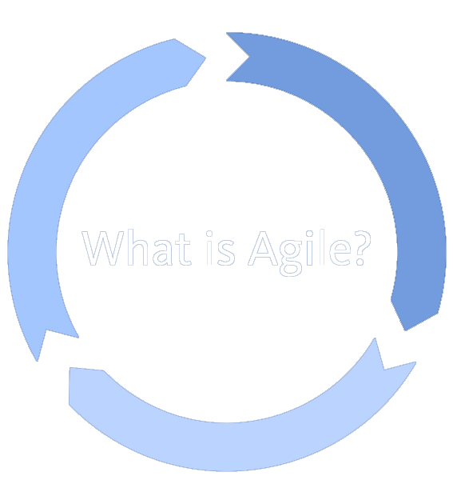
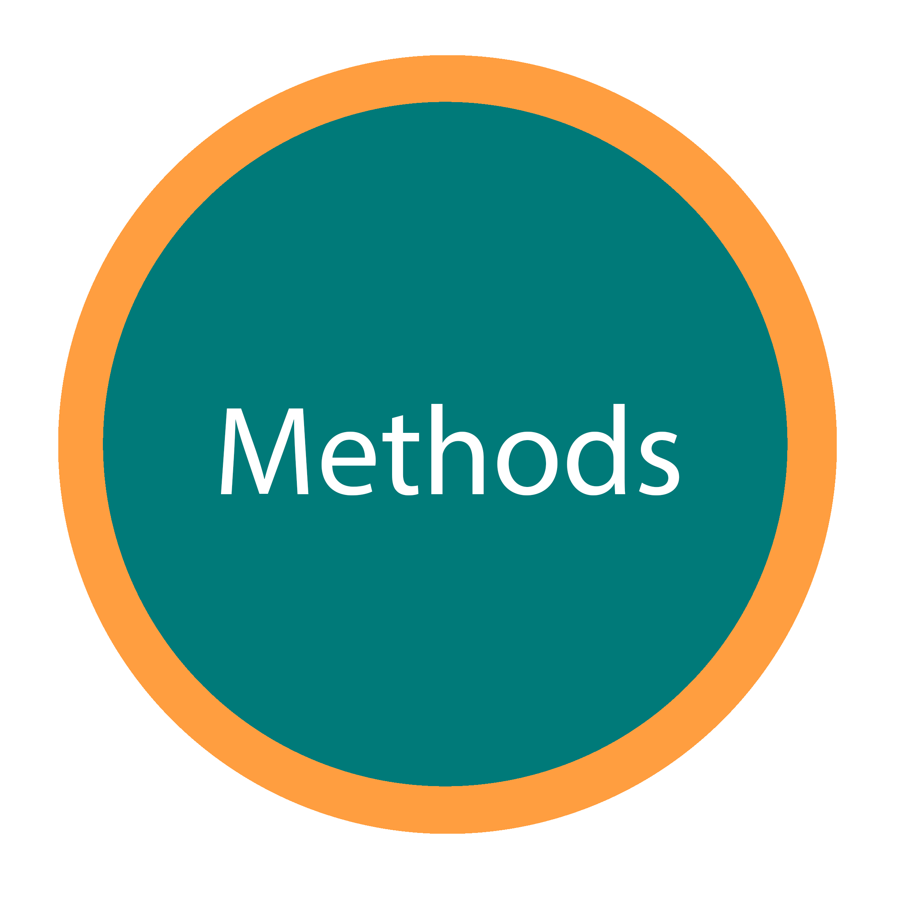
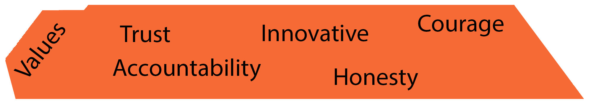
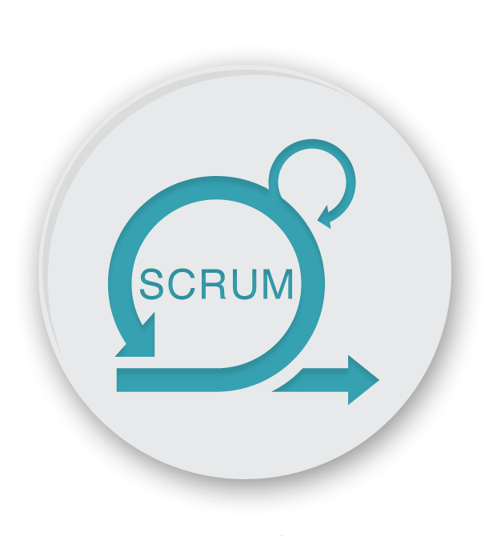
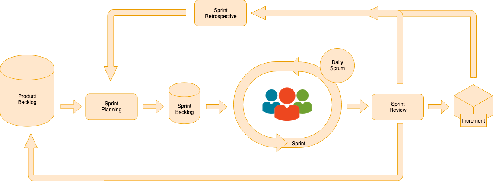

Agile is not a methodology
Agile has not

Agile process

Objetive
Adapt the way of working to the conditions of the project
Achieving flexibility and immediacy in the response
Adapt the project and development to the specific circumstances of the environment
Benefits of Agile Software Development
Stakeholder Engagement
Transparency
Early and Predictable Delivery
Predictable Costs and Schedule
Allows for Change
Focuses on Business Value
Focuses on Users
Improves Quality

What is?
Allows you to tackle complex projects in dynamic and changing environments in a flexible way.
It is based on partial and regular values of the final product based on the value we offer to customers.
Events
Sprint
Sprint Planning
Daily Scrum
Sprint Review
Sprint Retrospective
Artifacts
Product Backlog
Sprint Backlog
Increment
